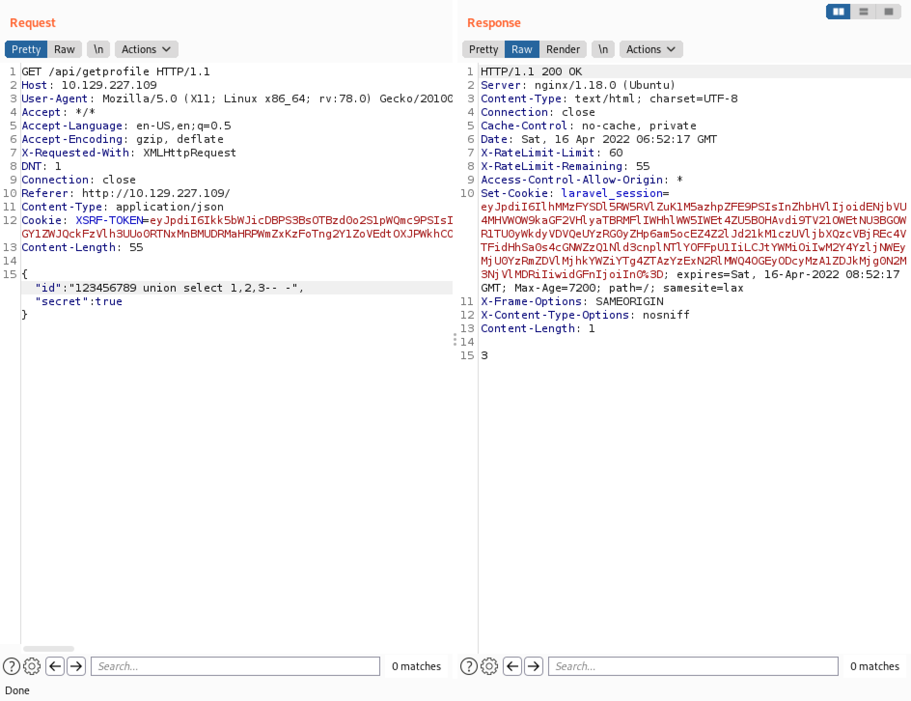

May 5, 2022
SQL Injection - Example 5
In this tutorial, we will see how to perform SQL injection by modifying data that is sent as JSON. Using this technique, we can list the contents of the databases, read local files on the server and gain reverse shell to the target.
This page contains a list of usernames. Clicking on "View" returns some info about that particular user.
Clicking on the first user returns some information about the first user.
This is the request that was sent when the first user was clicked. It contains two items: "id" and "secret".
Let's add a single quote (') after the ID and see the response from the web server. It returns "Server Error" message.

Commenting out the rest of the statement with (-- -) doesn't change the output. It still returns "Server Error".
Removing the single-quote gets rid of the error message. The output is the same as before.
Running the UNION SQL query shows that three columns are returned back from the query but we don't see any of our input.
Let's enter an ID that we are sure doesn't exist in the database. We can see that 3 is displayed.
The user() function returns the current user that is running these SQL queries on the web server.
We can also read files from the web server using the LOAD_FILE() function. It shows the contents of the "/etc/passwd" file.
Our next goal is to read the contents of the databases in the web server. It returns the first database name.
In order to list all the databases in the system, we have to use the group_concat() function. It returns five database names.
Let's list all the tables in the "uhc" database. It returns six table names.
The "users" table seems interesting. It lists all the columns in the "users" table.
It dumps the contents of the "name" and "password" columns. Note that they are enclosed in parenthesis and are separated by a colon.
Our next goal is to get a reverse shell on the web server. It Base64 encodes the command that we want to run on the web server.
It saves the Bash command for a reverse shell to a file called "secret.php".
Let's access the "secret.php" file through the browser.
And now we have received a reverse shell on the box. Note that it is important to create the netcat listener before executing the script from the browser.
We could have triggered the reverse shell script from the terminal using curl as well.
If you liked reading this article, you can follow me on Twitter: mujtabareads.
- PHP Type Juggling
- Server Side Template Injection - Example 3
- Server Side Template Injection - Example 2
- Server Side Template Injection - Example 1
- Local File Inclusion (LFI) Attack - Example 1
- SQL Injection - Example 4
- SQL Injection - Example 3
- SQL Injection - Example 2
- Cross-Site Scripting (XSS) Attack - Example 2
- Second Order SQL Injection - Example 2